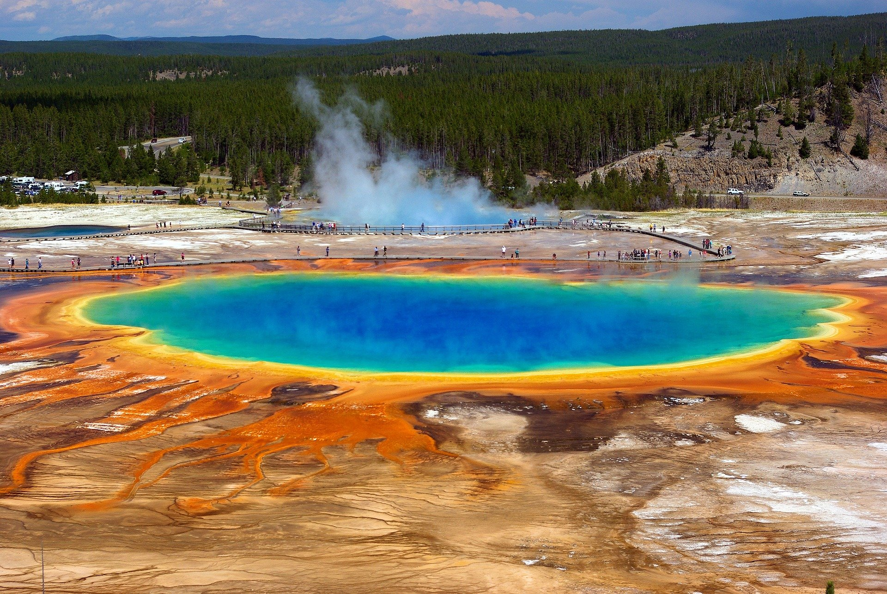

I’ve visited a variety of forests and lakes, but there are still tons of sights I want to see and many more places I want to explore. One Place I had the idea to travel to in the future, would be the Mojave desert. That's literally the exact opposite of a forest, why would I want to go there. It's because I love empty expanses, they are my favorite type of art pieces, and the Mojave desert is literally an open expanse, filled with yellow and white. I enjoy looking at all forms of nature, be it from a forest, to a lake, to the sky, or a desert. I want to see them all someday.
I also want to visit Yellowstone someday. I've heard so many things about it, except for how much there is to explore off trail. Of course I want to see the geysers there, but I also want to see things I can't find with just a google search.
And finally, I just want to take a long camping trip into the actual wilderness. I don't want to go to a dedicated camp site set in place by some person, I want to take a RV or some kind of van and take my family on one long adventure, we could go hiking, or walk along a river, anything could happen, I just want to go far out into the countryside and explore the forests of the united states.